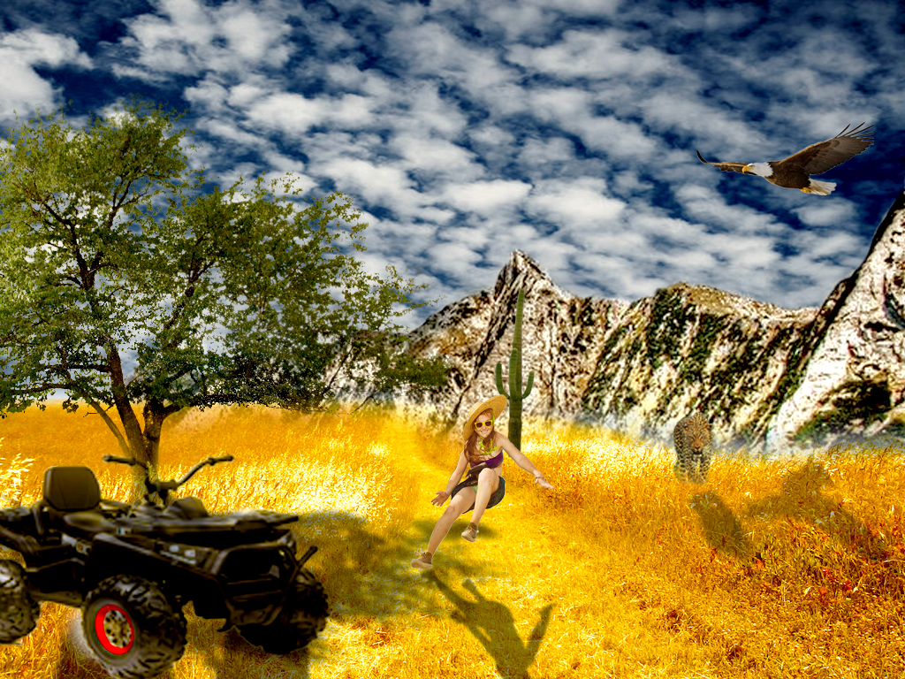

Zadatak je kreiranje proizvoljnog broja vlastitih krivulja čije su točke poravnate prema mreži koordinatnog sustava sa definiranom bojom i debljinom. Također je primjenjena i interpolacija (Blend). Koristeći vlastiti font je preko krivulja trebalo ispisati tekst i od njega napraviti masku.
Zadatak je izvesti vlastiti primjer sa multipliciranim objektima nacrtanima sa alatom Pen. Objekte je trebalo crtati ili kao konture odabrane slike predloška ili slobodno bez predloška. Tehnikama kopiranja je trebalo kopirati oblike, aplicirati drugačijim bojama kreiranim u novoj Color grupi te dodati barem pet novih boja. Također je trebalo koristiti rotacije, scale, transparenciju, multipliciranje oblika…
Zadatak je izrada složenih objekata koji se sastoje od više staza metodama spajanja (Unite/Compound path) ili oduzimanja oblika (Difference/Subtract) te apliciranje različitih vrsta gradijenata (linearni, radijalni, mesh) od dvije ili više boja. Također je bitna i transparencija i poredak slojeva u izradi složene grafike te je trebalo kreirati i vlastiti složeni objekt.
Zadatak je korekcija zadanih slika (uklanjanje oštećenja, pjegica...). Koristili smo tehnike digitalnog retuširanja fotografija za postizanje realističnog efekta. Za selekcije smo koristili Lasso Tool, za uklanjanje nedostataka na slici zamućivanje (Dust & Scratches, Median), kloniranje (Clone Stamp, Heal), kopiranje selekcije u layere, te lokalne i globalne korekcije boja (Burn/Dodge brush, Levels, Brightness/Contrast)
Zadatak je bio koristiti tehnike neinvazivnog koloriranja slike koje se može primijeniti na crno-bijele slike ili slike u boji kojima želimo promijeniti nijansu određenih područja. Selekcijom željenih dijelova slike smo stvarali maske kojima skrivamo ili otkrivamo efekte kolorizacije. Boja se aplicira na zaseban sloj (layer) kako ne bismo uništili originalne tonove. Neke od tehnika koje smo koristili su: selekcije (Magnetic Lasso Tool, Quick Mask Mode), metoda kolorizacije bez uništavanja boja na originalnoj slici (Adjustment layer).
Zadatak je bila fotomontaža fotografija. Kombinirali smo više fotografija, izrezivali dijelove različitih slika i spajali ih u jednu cjelinu. Koristili smo različite tehnike selektiranja jednostavnih i složenih oblika. Jednostavne tehnike selekcije su uključivale alate kojima selektiramo poligone i oštre rubove objekata, a složenije tehnike selekcije podrazumijevale su selekciju putem kanala slike ili crtanje maski brush i eraser alatima u modu quick mask. Izrađivali smo sjene objekata za veći dojam realističnosti.
Zadatak je bio izraditi vlastite kinemagrafe. Izrezivali smo video isječke tehnikom Mark in-Mark out, uklanjali zvuk (Unklik - Clear), te dodali statične slike kao maske. u Photoshopu smo dodavali transparenciju na maske, gdje smo bijelom maskom postigli potpunu vidljivost elementa slike, a crnom maskom potpunu transparenciju.


Zadatak je bio Izrezati klipove, dodati im barem tri nova efekta te jedan statični i jedan pomični tekst. Dodavali smo i zvuk te izvezli video u mp4 formatu. Koristili smo razne tehnike uređivanja videa kao što su Time Remapping – Speed (za usporavanje dijela videa), efekt Motion - Position i Rotation (okretanje kadra) Opacity – Fade In efekt (pretapanje jedne slike u drugu).
Zadatak je bio stvoriti web sadržaj. Multimedijski sadržaji koje smo koristili su tekst, slika, video i zvuk. Web stranice smo kreirali putem označnog jezika HTML. Rabili smo naslove prve, druge... razine, kreirali navigacijske, uređene i neuređene liste. Stilizirali smo našu web stranicu u nekom Css programu. Sve datoteke smo organizirali u logične mape i sve zajedno uploadali na svoj Github račun. Stiliziranje HTML sadržaja se definira jezikom CSS (Cascading Style Sheets) kojim određujemo veličine, pozicije, boje i druge stilske karakteristike sadržaja.
Prvi projektni zadatak je obuhvaćao vježbe broj 1, 2, 3 i 4. Zadatak je bio kreirati vlastiti font te napraviti ilustraciju u Illustratoru. Neke od tehnika koje smo koristili su: Mesh, linearni i radijalni gradijenti, definiranje Swatch boja, transparencija, Clipping mask, krivulje i alat Blend...

Drugi projektni zadatak je obuhvaćao vježbe broj 5, 6 i 7. Zadatak je bio kreirati sliku kao kompoziciju više fotografija koristeći tehnike retuširanja, fotomontaže i koloriranja. Neke od tehnika koje smo koristili su: alati selekcije koje smo spremali kao kanale, sjene, transparencije slojeva, koloriranje dijelova slike u različite od originala...